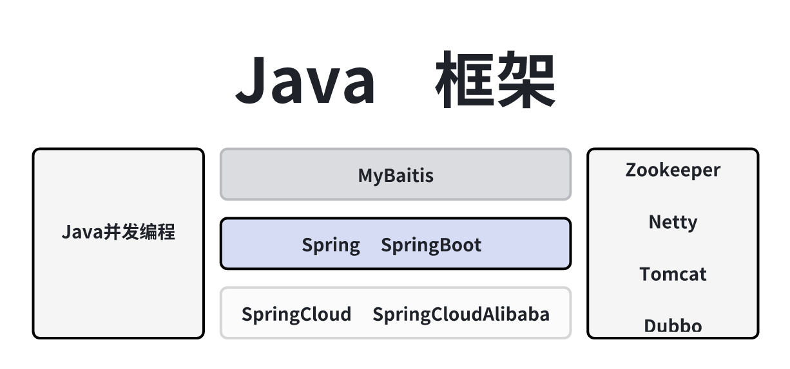

Nginx Nginx使用 Nginx原理分析 Nginx安装与调优 MySQL MySQL使用 MySQL原理分析之架构原理 MySQL原理分析之存储引擎 MySQL原理分析之事务与锁 MySQL原理分析之索引 MySQL原理分析之SQL优化 MySQL安装与调优 MySQL分库分表之ShardingSphere MySQL分库分表之MyCat Mongo Mongo使用 Mongo原理分析 Mongo安装与调优 Lucene_Solr Lucene使用 Lucene原理分析 Solr使用 Solr原理分析 Solr安装与调优 ES ES使用 ES实际查询语句 ES原理分析 ES安装与调优 计算机网络 OIS七层网络架构 HTTP-TCP-IP 常用的网络排查工具命令 HttpClient上传文件 阿里EasyExcel使用 WebSocket使用 WebSocket原理 Linux Linux使用目录 Linux内核目录 01Linux最常使用 02LinuxIO零拷贝与多路复用器 Redis Redis使用 Redis原理分析 Redis安装与调优 内存 Cache GuavaCache EVCache TairCache Aerospike 消息队列 MQ MQ介绍 Kafka使用 Kafka安装与调优 Kafka原理分析 RocketMQ使用 RocketMQ安装调优 RocketMQ原理分析 RabbitMQ使用 RabbitMQ安装与调优 RabbitMQ原理分析 Zookeeper Zookeeper使用 Zookeeper安装与调优 Zookeeper原理分析 Zookeeper源码分析 AI 00大模型接口使用 Algo 常见的限流算法 JVM 基于Linux分析JVM Java核心 java基础 java各个版本新特性 java集合和JUC集合 设计模式  JavaFramework MyBatis使用 MyBatisPlus使用 MyBatis源码分析 Spring使用 Spring常用扩展点 Spring源码分析-阅读方式1大篇幅 Spring源码分析-阅读方式2小篇幅 SpringBoot使用 SpringBoot扩展点 SpringBoot源码分析-阅读方式1大篇幅 SpringBoot源码分析-阅读方式2小篇幅 SpringCloud使用 SpringCloud源码分析 Dubbo使用 Dubbo源码分析 Netty原理分析 Netty使用 Netty源码分析 C核心 c基础